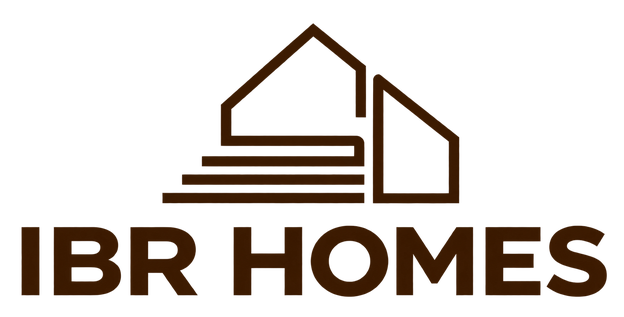
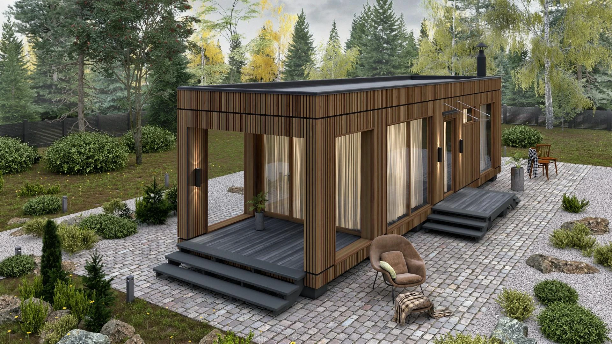
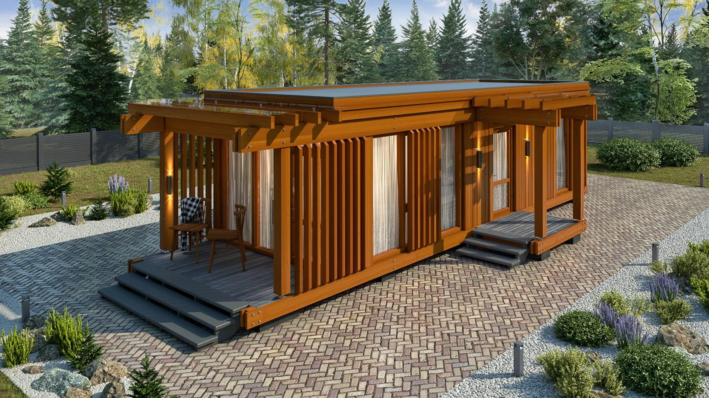
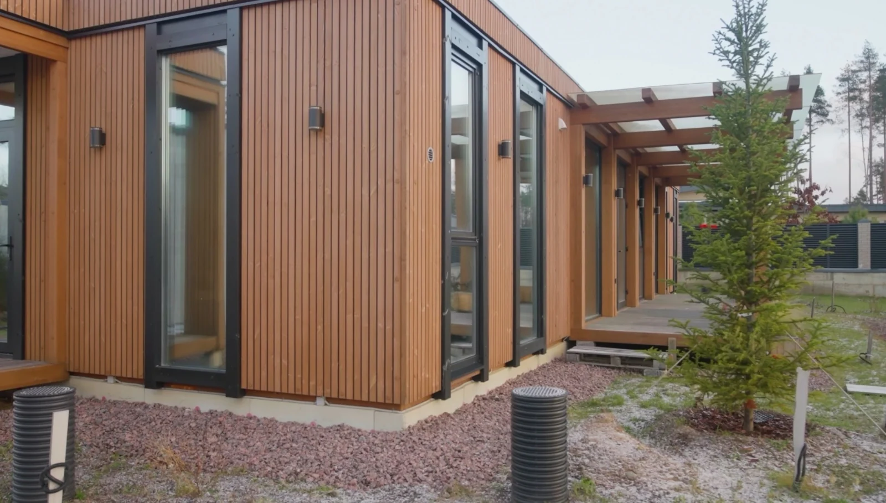
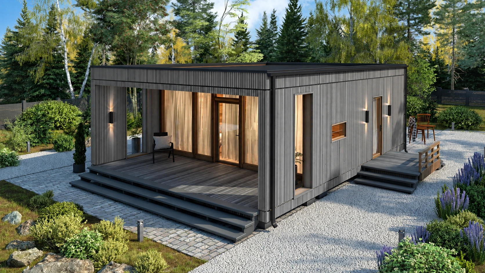

01 этап
Знакомство
Начинаем с того, что важно вам
- Образ жизни и пожелания
- Участок и место строительства
- Желаемая площадь и бюджет
Результат этапа
Понимаем задачу и ориентир по бюджету





Создадим дом из CLT под ключ до 3 месяцев — от проекта до готового решения.
В строительстве с 2011 года.
Собственное производство.
Сначала определяем задачу.
Затем превращаем её в проект.
Начинаем с того, что важно вам
Понимаем задачу и ориентир по бюджету
Придаём вашим идеям точную форму
Согласовываем проект и состав работ
Готовим всё для начала строительства
Готовим элементы дома и участок к монтажу
Превращаем проект в ваш дом
Проверяем результат и передаём вам дом

CLT — это перекрёстно склеенные деревянные панели. Слои досок соединяют так, чтобы волокна соседних слоёв шли под прямым углом. Получается прочный материал для несущих стен, перекрытий и кровельных конструкций.
Чаще всего панели состоят из трёх, пяти или семи слоёв. Перекрёстная структура повышает жёсткость и стабильность размеров. Количество слоёв и толщину подбирают под нагрузки, пролёты и архитектуру конкретного дома.
Панель работает как единый конструктивный элемент. При этом древесина остаётся натуральным материалом: условия хранения, влажность и правильные соединения важны на всех этапах.
Положение окон, дверей, стыков и инженерных проходов согласуют заранее. Панели изготавливают под проект, а необходимые проёмы подготавливают на производстве. На участок поступают элементы для сборки в заданной последовательности.
CLT формирует несущую основу. Тепло в доме обеспечивают вместе утепление, герметичные стыки, окна, отопление и вентиляция. Состав стен и крыши рассчитывают с учётом климата и режима проживания.
При перевозке и монтаже панели защищают от осадков и скопления воды. Особое внимание уделяют торцам, проёмам и соединениям. В готовом доме защиту древесины обеспечивают продуманные узлы кровли, фасада и отвода влаги.
Поверхность CLT можно оставить видимой или дополнить отделкой. Внешний вид, защитное покрытие, требования к акустике и пожарной безопасности учитывают в проекте вместе с инженерными системами.
Обсудим планировку, пролёты, толщину панелей, утепление, фасад и инженерные системы. Так архитектура и конструкция будут работать вместе.
Обсудить дом из CLT ↗Перекрёстная структура позволяет использовать панели в качестве основных конструктивных элементов здания.
Технология снижает усадку и склонность древесины к деформации, помогая сохранять геометрию конструкций.
Панели изготавливаются по проекту на производстве и поступают на объект подготовленными к монтажу.
Заводская обработка обеспечивает соответствие проектным размерам, точность проёмов и соединений.
В зависимости от проекта поверхность панелей может оставаться открытой и использоваться как часть оформления интерьера.
CLT-панели формируют прочную основу дома. В сочетании с рассчитанным под климат утеплением, качественными окнами, вентиляцией и отоплением технология подходит для строительства домов постоянного проживания.
Изготавливаем CLT-панели и модули домов на собственном производстве.
Разрабатываем планировки с учётом ваших задач, пожеланий и особенностей участка.
Возводим дома под ключ — с отделкой и инженерными системами.
Ответьте на несколько вопросов — подберём планировку и комплектацию под ваши задачи и подготовим предварительный расчёт стоимости строительства из CLT-панелей.
От конструкции к комфорту.
Шесть решений, которые
важно продумать вместе.
Выберите дом и архитектурный стиль.
Рассмотрите планировку и найдите свой формат.

Сдержанный антрацит или тёплое дерево — посмотрите, как цвет меняет один и тот же дом.

Визуализация оттенков
Материал уточняем по образцам
Выбранный оттенок добавим к заявке. Применение к вашему проекту обсудим отдельно.
Выбрать проект